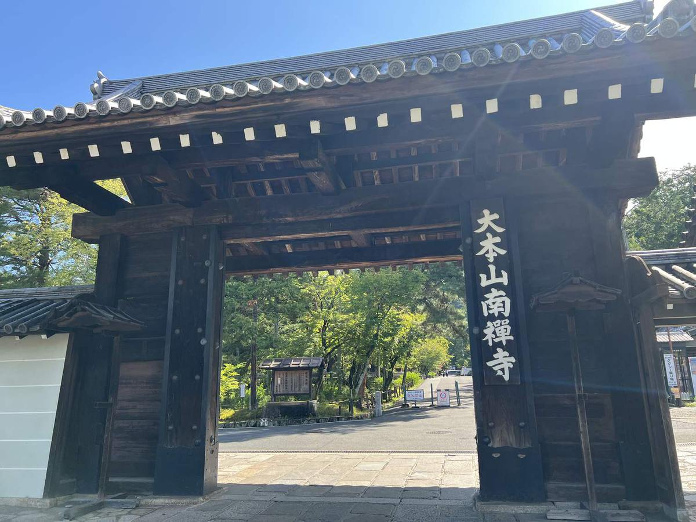
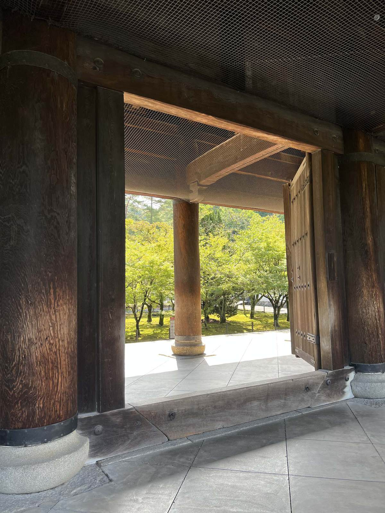
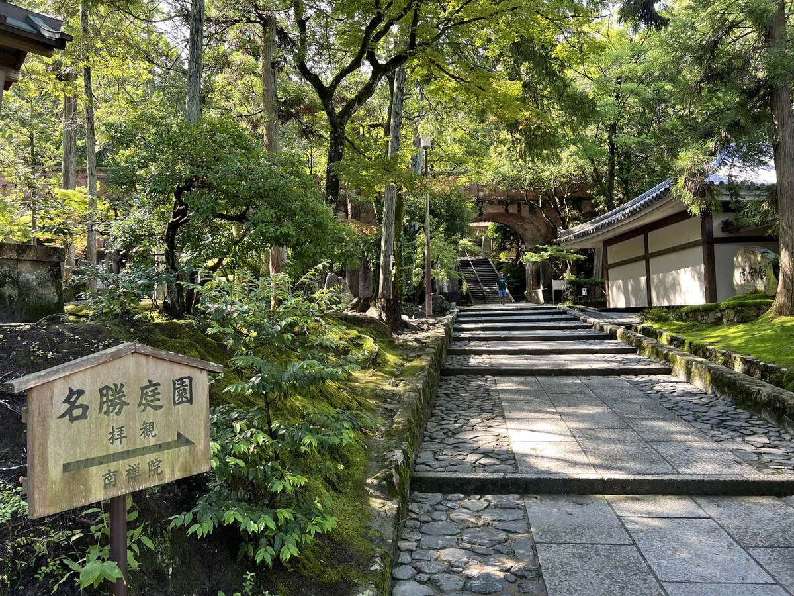

岡崎から東へ15分ほど歩くと、道の突き当りに大きな木の門があります。柱に「大本山南禅寺」。ここから先は、街の音が急に減ります。

禅寺の最高位
南禅寺が開かれたのは1291年です。亀山法皇が、自分の離宮を禅寺に改めた。それから約100年後の1386年、足利義満が五山の制度を定めるにあたって、南禅寺を五山の上（五山之上）——つまり禅寺の最高位に置きました。京都五山にも鎌倉五山にも属さない、別格の寺です。
参道を進むと、巨大な三門が現れます。今建っているものは1628年に、伊勢津藩主の藤堂高虎が大坂夏の陣で亡くなった将兵を弔うために再建したものです。歌舞伎で石川五右衛門が楼上から「絶景かな」と見得を切る舞台として知られていますが、あれは創作で、五右衛門が生きていたのは今の三門が建つより前のことです。

ここまでは、京都の大きな禅寺の、ごく順当な歴史です。おかしくなるのは、この先です。
そして、レンガが横切っている
三門の脇を抜けて奥へ進むと、突然、赤レンガのアーチが視界を塞ぎます。高さおよそ13メートル、全長およそ93メートル。水路閣です。1888年（明治21年）に建てられました。
禅寺の境内です。そこに、明治のレンガ構造物が、まっすぐ横切っている。しかも遠慮して端を通っているのではなく、参道の真上を堂々と渡っています。
これは景観ではなく、装置だった
前の記事に書いたとおり、明治のはじめに都の機能が東京へ移り、京都は沈みます。その京都が打った、もう一つの大きな手が琵琶湖疏水でした。
琵琶湖から山を貫いて京都へ水を引く。当時の日本にとって桁外れの土木工事で、設計と現場を率いたのが田辺朔郎という若い技術者です。第一疏水は1890年に完成しました。水路閣は、その分線を南禅寺の境内越しに通すために架けられた水道橋です。
疏水が運んだのは水だけではありません。船を斜面で上げ下げして荷を通し、そして1891年、疏水の落差を使った蹴上発電所が動き出します。これが日本で最初の事業用水力発電所でした。
その電気は街灯を灯し、工場を回し、日本で初めて営業した電気鉄道を走らせます。沈んだ街が、水を引いて、電気をつくって、自力で立ち上がった。水路閣は、その配管の一部です。
130年かけて、風景になった
当時、寺の境内にレンガの構造物を通すことにどれだけの議論があったのか、私は資料で確かめていません。ただ、想像はできます。700年続いた場所に、見たこともない西洋の建造物を突っ込むのです。歓迎一色だったはずがない。
それが今では、水路閣は南禅寺を代表する風景になっています。ここで写真を撮るために来る人のほうが、三門を見に来る人より多いかもしれない。当時いちばん異物だったものが、いちばん「京都らしい」と言われる場所になった。
これは、いま京都で起きていることと同じ構図だと思っています。
外国人のお客さんが増えて、店に多言語の案内やQRコードが増えました。それを「京都らしくない」と感じる人はいます。私も、街並みに合わないものが増えるのは嫌です。ただ、水路閣も最初はそう見えたはずです。問題は新しいかどうかではなく、その街で本当に必要とされていて、130年後に風景になれるだけの質があるかどうかです。
京都ラボがつくる道具も、そこで判断されるべきだと思っています。

実用情報
- 歩き方
- 地下鉄蹴上駅から徒歩圏。平安神宮からも歩いて来られます。境内は広く、参道は自由に歩けます。
- 有料の場所
- 三門の楼上、方丈庭園、南禅院はそれぞれ拝観料が必要です。料金と時間は変わることがあるので、南禅寺の公式案内で確認してください。
- 水路閣
- 参道からそのまま見上げられます。アーチの下をくぐって石段を上がると南禅院と、水路の実物が見られます。
- 混雑
- 水路閣の下は写真を撮る人で滞留しがちです。朝の早い時間が最も空いています。紅葉の時期だけは別格に混みます。
- 足元
- 石畳と苔で滑りやすい箇所があります。雨の日は特に注意してください。
- 静けさ
- ここは今も修行の場です。塔頭の門前や方丈の周辺では、声の大きさに気をつけてください。
シリーズ 京都を通る水
- 01鴨川は等間隔になる誰も決めていないのに、座る人の間隔は揃う
- 021895年生まれの「平安」平安神宮は、平安時代のものではない
- 03寺を突っ切る水道橋いま読んでいる記事